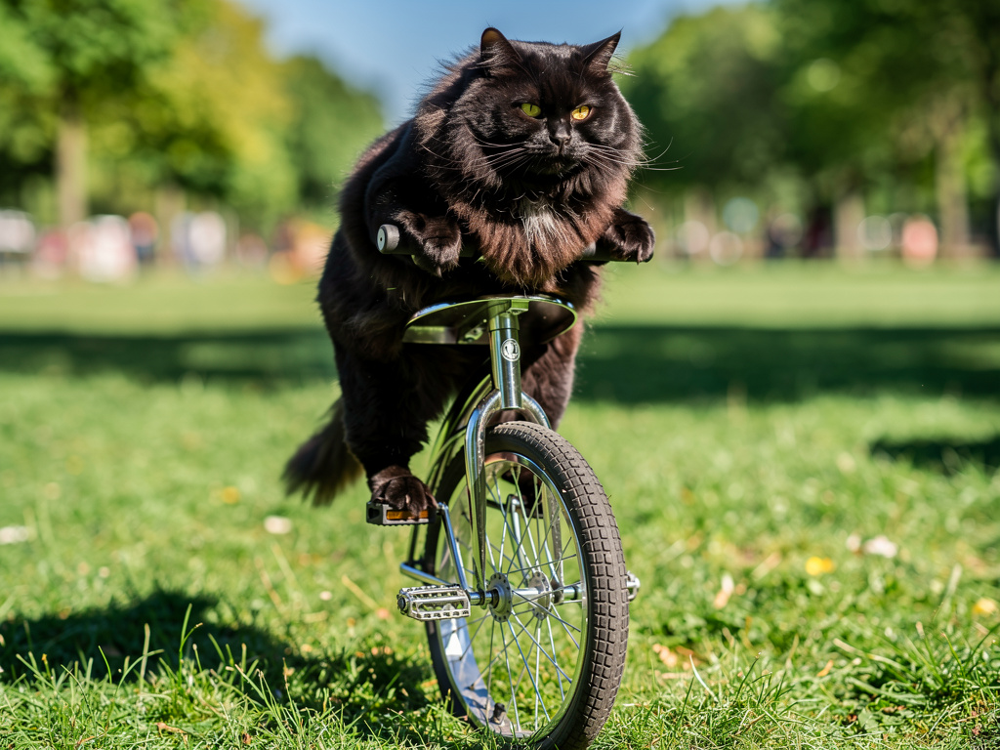

Midnight Rider
Focused and determined in the park
A Curated Collection
Balance. Grace. Whiskers.
The Collection
Each portrait captures a moment of feline determination, grace, and the occasional surprised expression.
Focused and determined in the park
Urban explorer with proper headgear
Riding AND juggling
Elegant and sophisticated
Didn't expect to be this good
Adventure at golden hour
Did You Know?
The science and statistics behind feline unicycling excellence.
Cats possess innate balance capabilities that exceed human unicycling proficiency. Their vestibular system and tail act as a natural gyroscope.
The current world record stands at 47 seconds of continuous unicycling. Most cats, however, get distracted by laser pointers at the 3-second mark.
Statistical analysis reveals orange cats are 23% more likely to attempt unicycling. Researchers theorize they allocate their single brain cell entirely to balance.
Unicycle cats demonstrate purring volumes 15% louder than their non-cycling counterparts. The confidence boost from mastering one wheel is measurable.